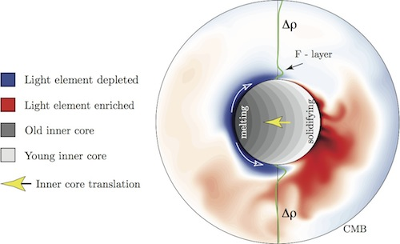

Projects
F-layer formation at the inner core boundary
Core
The extreme temperatures and pressures in the Earth's core make it difficult to interpret its structure and dynamics. However, intriguing clues are found in the behavior of seismic waves as they pass through the inner and outer core. Observations of lower compression wave (P-wave) speeds in a 150–200 km-thick layer just above the inner core boundary raise questions as to how this region, known as the F-layer, is formed. Our study, recently published in Comptes Rendus Geoscience, uses computer simulations of inner earth physics to explain how inner core growth creates a dense, iron-rich, F-layer.
Figure 1. This map of the outer core was generated with the computer simulations used in the study. The blue layer represents a dense layer, similar to the seismically observed F-layer, formed above the inner core boundary by localized melting of the crystalline inner core. It also shows the process of heterogeneous inner core growth known as inner core translation, which results from melting and solidification in opposite hemispheres.
In order to deplete the F-layer of lighter elements and create an iron-rich layer with lower P-wave velocities, there must be simultaneous melting and solidification of the inner core. This requires a systematic variation in temperature on the inner core boundary. One explanation for this varied temperature, and the focus of the study, is the process of inner core translation, which elevates one side of the inner core, promoting localized melting, while lowering the opposite side, promoting localized solidification. As one side of the inner core melts and the other side solidifies, the inner core moves laterally, or translates. The situation is analogous to an alpine glacier, where solidification (ice accumulation in that case) occurs at one end, melting occurs at the other, and the flow of the glacier carries ice from where it accumulates to where it melts.
We simulate the growth of the inner core, as well as its melting and solidification by imposing a hemispherical variation in the concentration of light elements alloyed with iron in the inner core; high light element concentration corresponds to the freezing side of the inner core, low concentration corresponds to the melting side.
One result of our simulations is the formation of a dense (iron rich and light element poor) gravity current that originates at the melting side and nearly circles the entire inner core. The only part of the inner core not covered by this dense current is ventilated by strong, buoyant plumes that spew light elements into the fluid outer core. Such localized spewing of buoyant light elements has major effects on the circulation in the outer core and on the structure of geomagnetic field. In particular, it displaces the axis of the geomagnetic dipole from the Earth's rotation axis by several hundred kilometers, producing what is known as dipole eccentricity.
References
Renaud Deguen, Peter Olson, Evan Reynolds, F-layer formation in the outer core with
asymmetric inner core growth, Comptes Rendus Geoscience, In Press.
dx.doi.org/10.1016/j.crte.2014.04.003.